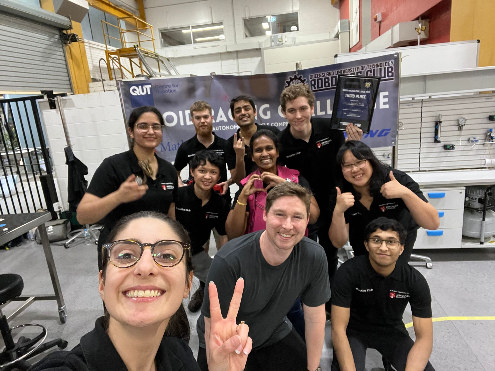
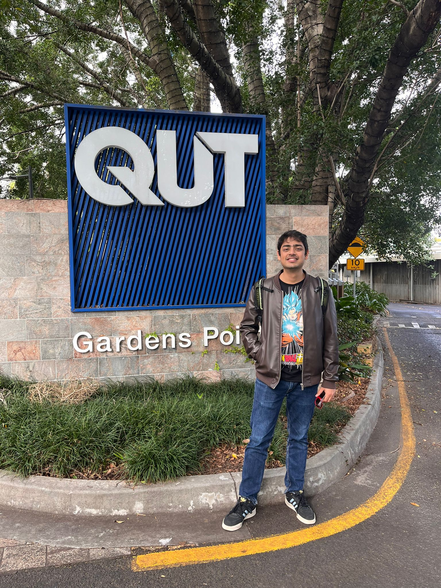
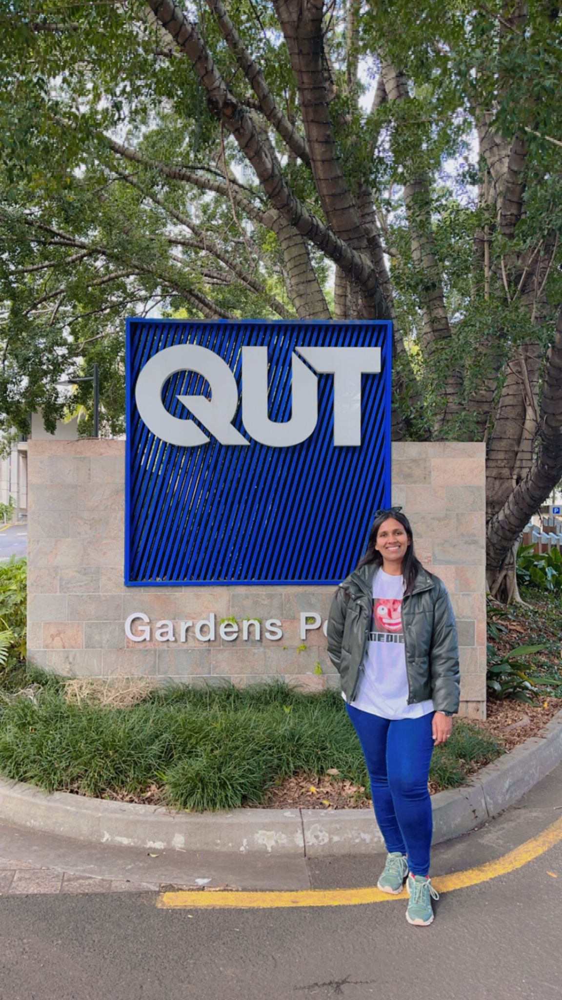
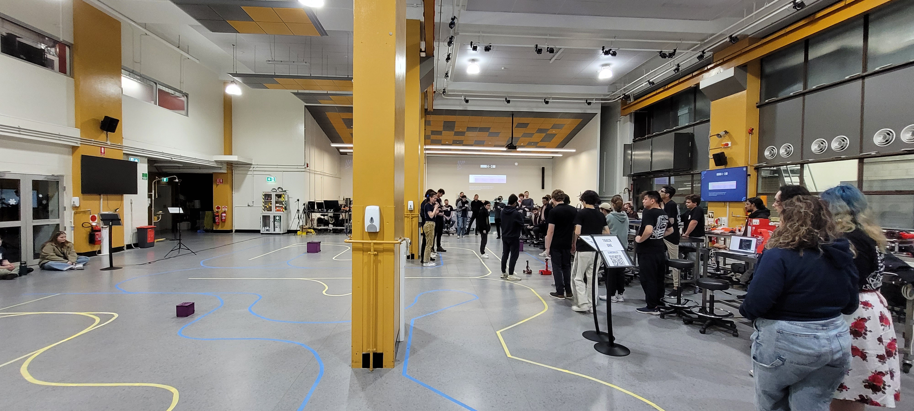
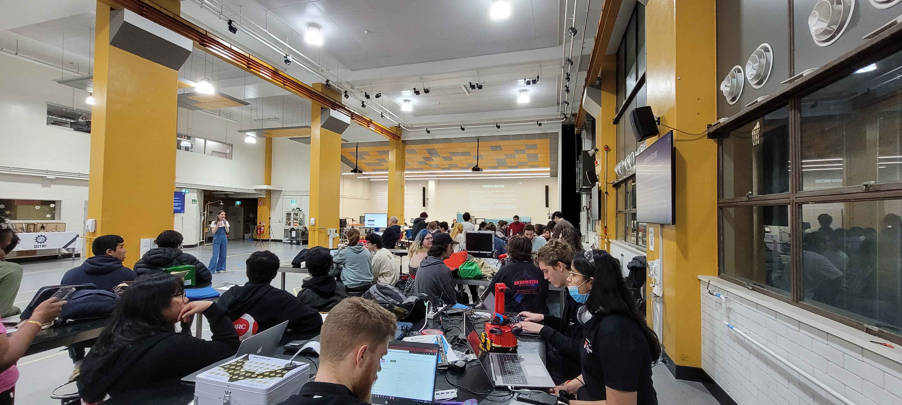
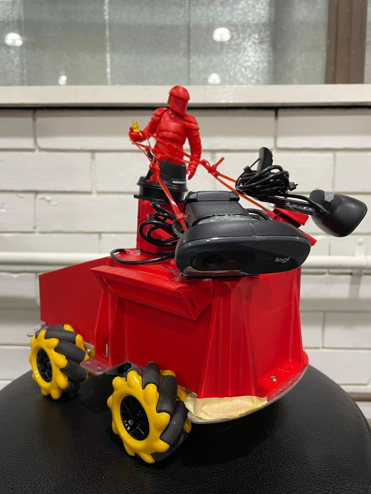
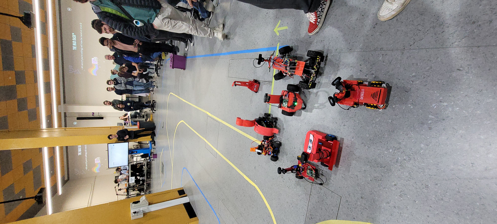
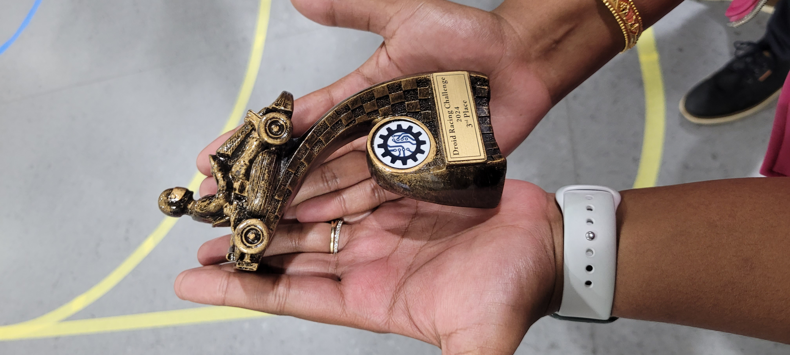

<!----------------------------------------------------------------
------------------------ Research Section -----------------------
----------------------------------------------------------------->
<section id="research" class="research">
  <div class="container">

    <div class="section-title">
      <h2></h2>
      <p>QUT Droid Racing Chalenge 2024</p>
    </div>

<hr>            
<h4> Blog Post: Our Journey to 3rd Place at the QUT Droid Racing Challenge! </h4>
<hr>


<div class="whole-wrap">
        <div class="container">
          <div class="section-top-border">
            <!-- <div class="research-item pb-0"> -->
              <div class="row">
                

<ol>
  <p> The Droid Racing Challenge (DRC) is an exciting student robotics competition focused on creating ground-based autonomous racing platforms. These droids are designed to operate autonomously, leveraging robotic vision, navigation, obstacle avoidance, and mechanical design optimized for speed. The challenge is designed so that a small team of undergraduate students can build a capable robot within one semester.</p>
    <p>Participants must design and build a completely autonomous system capable of racing around a track marked by two colored lines while avoiding collisions with other vehicles and obstacles through the use of computer vision. The open-ended design aspect encourages teams to find creative and innovative solutions to the problem.</p>
    <p>We are proud to announce that our team (MURC) secured 3rd place in the autonomous droid racing competition! This achievement would not have been possible without the dedication and hard work of the entire team and the support of the Macquarie University Robotics Club members.</p>

<p>Team Members:
Natalia Chatrath (Mechatronics ENG)
Tom Pang (Mechatronics ENG)
Jack Lewis (Electrical ENG)
Avishkar Seth (Myself) (Mentor)
Alice James (Mentor)
Ewen MacCulloch (Software ENG)
Naruethai Thongphasook (Data Science)
Dhruv Banerjee (Mechatronics ENG)
Special Thanks:
Alaa Sukkarieh (FSE Staff) for organizing flights and accommodation.
Lachlan Thompson (Videographer) for capturing videos and photography of the event.
Ibrahim Omeroglu and Caitlyn (Software Teammates) for their contributions to the early droid development.
Thank you to everyone who supported us throughout this journey!
Some photographs below!
#QUT #DRC #DroidRacingChallenge #MURC #MQ #Robotics
  
  </p>
    <br>
    
    
    
    
    
    
    
    
    
  </b>  
            
</ol>
</div></div></div></div>

 
    </section><!-- End Services Section -->

  
